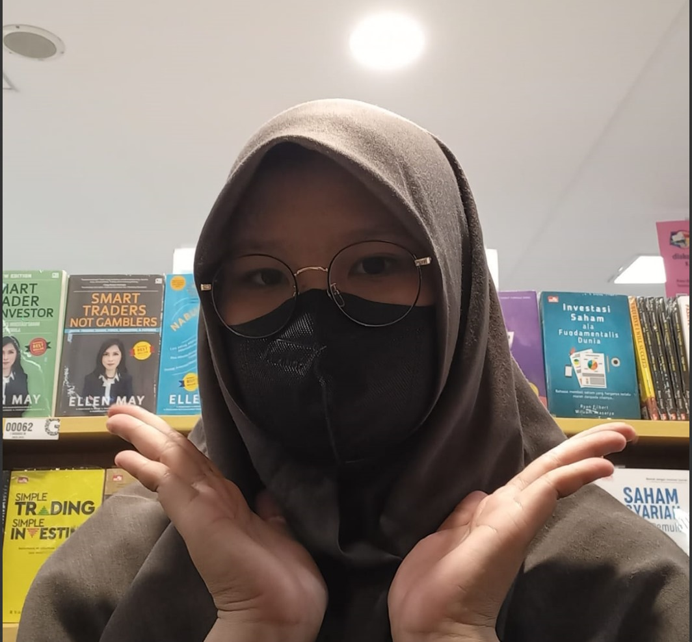

Hi! I'm Luthfianya Isyathun Rodiyyah. Often people called me Luthfi, actually i prefer to be called Anya but using either one is fine. I'm currently a student in Institut Teknologi Sumatera, I'm an undergraduate from Informatic Engineering major. I guess that's all, but hey thank you for coming here!

Biodata
Name :Luthfianya Isyathun Rodiyyah
NIM :122140185
Place/Date of birth :Bandar Lampung, January 26th 2004
Address :Jalan Raja Ratu, Kel. Labuhan Ratu, Kec. Kedaton, Bandar Lampung
Gender :Female
More about me:
Instagram